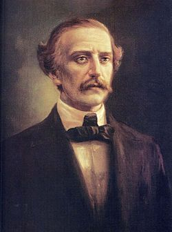
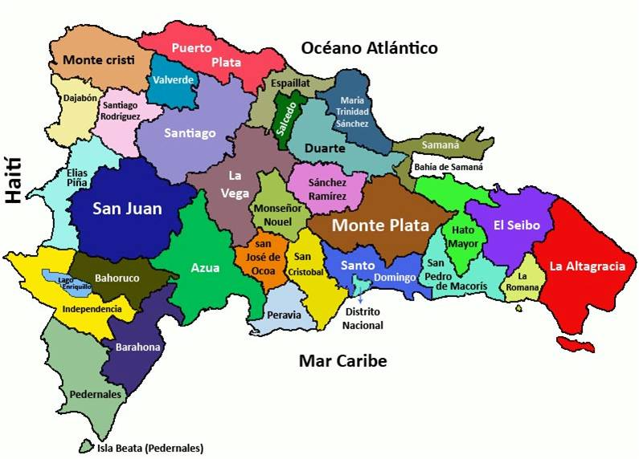

 Juan Pablo Duarte Díez (26 de enero de 1813 - 15 de julio de 1876) fue un liberal, visionario y activista dominicano, a quien se le conoce como el ideólogo de la lucha contra la invasión haitiana para conseguir la independencia dominicana. Junto a Francisco del Rosario Sánchez y Matías Ramón Mella, es considerado como uno de los Padres de la Patria de la República Dominicana.
Su visión liberal se vio socavada por las élites conservadoras, que pretendían ajustar la nueva nación con las potencias coloniales y volver al regionalismo tradicional. Sin embargo, sus democráticos ideales, aunque un tanto imprecisos, han servido como principios rectores para la mayoría de los gobiernos dominicanos. Su iniciativa lo convirtió en un mártir político a los ojos de las generaciones posteriores.
